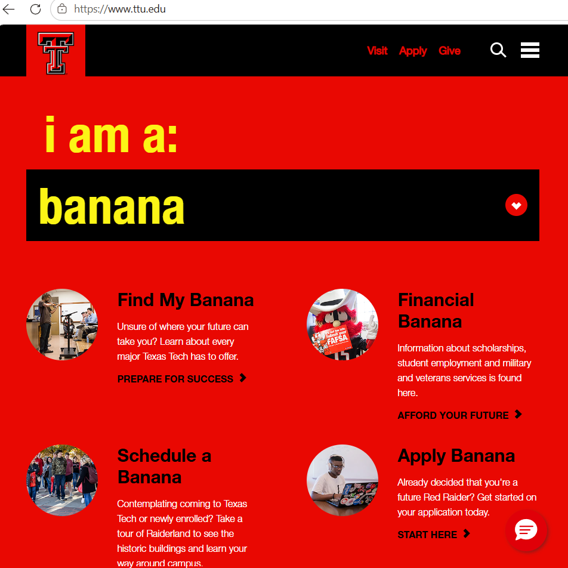

My Dev Tools Vandalism
I used browser developer tools to temporarily "vandalize" a website. Below is a screenshot showing my changes. These edits only appeared on my computer and did not affect the actual website.

What I "Vandalized"
Describe the changes you made to the website using the browser's developer tools. Some potential questions to consider:
- I edited the ttu.edu homepage.
- I modified color and text-transform.
- I replaced some words with banana, which does not fit a school website, which makes it entertaining.
- Yes, I understood why some changes worked and some didn't.
- I chose to modify color and text-transform as they would be easily visible.
- Yes, I was able to understand how the HTML and CSS worked together to make the changes I made.
- Yes, I think I now have a better sense of how dev tools can be used while crafting my own webpages.